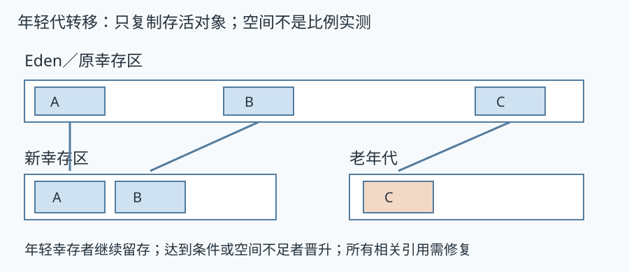
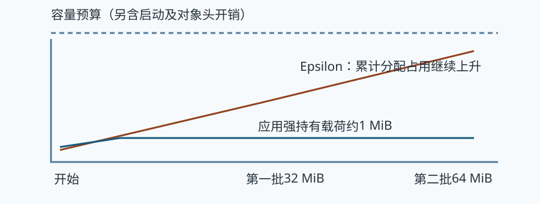

第五篇 · 垃圾收集与运行时协作
第21章 Serial、Parallel 与 Epsilon
先从三种简单选择看清成本：单工作者暂停回收、多个工作者暂停回收，以及只分配而不回收。
本章基于 Java 开发工具包（Java Development Kit，JDK）25.0.5.0.2 与 HotSpot；垃圾收集（Garbage Collection，GC）的实现结论定位到固定 OpenJDK 提交，语言与类库语义单独注明。容量单位采用兆二进制字节（mebibyte，MiB）和千二进制字节（kibibyte，KiB）。前置为对象、分配和执行引擎；源码阅读、运行说明与证据索引相互对应。
21.1 Serial的回收流程
21.1.1 复制、幸存与晋升
Serial年轻代通常从Eden和一个幸存区开始，根及跨代入口指向的存活对象被复制到另一幸存区或晋升到老年代。没有被追踪到的对象不必逐个析构；原区域整体恢复分配。复制成本与存活量、引用边数和目标空间有关，而不只与本轮分配量有关。
对象年龄是经历相应年轻代收集后的信息；达到动态阈值、目标幸存区放不下或其他实现条件都可能晋升。不能把某个最大年龄参数写成每个对象必定留在年轻代那么多轮的保证。

21.1.2 暂停内工作的组成
根扫描找入口，遍历工作找到存活闭包，复制／晋升更新引用；老年代完整回收沿标记、地址计算／调整及整理路径恢复连续空间。Serial的主要堆回收工作使用单个收集线程，应用在相应阶段暂停；运行时仍然存在其他服务线程，不能将它说成整个进程单线程。
读日志先区分年轻代与完整收集，再核对前后各代大小与触发原因。Allocation Failure可以表示当前分配路径空间不足而发起正常回收，不自动等于进程已发生内存耗尽错误。
21.2 Parallel的工作分配
21.2.1 多个工作者处理对象图
Parallel在暂停内由多个工作者扫描和转移。线程局部队列使工作就近处理，任务窃取让暂时空闲的工作者帮助处理未完成的对象。对象数组可以拆分，根和对象图的任务仍需协调完成后才能结束这一阶段。

21.2.2 收益受图形与资源限制
一个很长的依赖链很难完全拆开；大数组、不同大小对象及稠密引用让任务不均。工作线程还竞争目标空间分配、内存带宽和缓存，所以两倍工作线程不推出一半暂停。工作者都完成才能前进，最慢的一组任务可能决定结束时刻。
Parallel以吞吐导向的适应策略管理代际容量，仍会产生暂停；不能从名字推导“所有回收都并发”。本轮使用两个可见处理器预算，记录实际工作者配置，不把宿主八核直接当成每个进程的可用并行度。
21.3 分配失败与自适应调整
21.3.1 空间不足后的路径
年轻代分配不成功先可能触发年轻代收集；若幸存对象缺少转移目标，晋升可能占用老年代。年轻代回收能否开展、老年代可用空间与晋升失败后的处理由收集器决定，进一步完整回收会增加暂停。最终仍无足够空间才可能向程序报告内存耗尽。
复制的正确性不能在失败时留下半新半旧的任意引用；实现须处理转发、保留对象与进一步整理。本轮没有主动触发晋升失败，正文沿DefNewGeneration与PSScavenge说明路径，故障现象不填成实测。

21.3.2 固定配置限制了哪些适应
适应策略使用暂停、吞吐及代际占用等历史信息调整容量／年龄等决策；调大某代通常要从总预算或另一代取得空间。固定总堆并不意味着所有代际划分完全固定，固定年轻代参数又会限制策略可选择的范围。
日志里的年龄表、期望幸存空间与阈值比“对象活得久所以晋升”更具体。冷启动几轮的数据仍可能代表策略学习期，因此本次有限观察不评价其长时间稳定目标是否达成。
21.4 Epsilon的无回收设计
21.4.1 只分配，不回收对象空间
Epsilon维持分配与堆管理能力，却不追踪死亡对象来恢复堆空间。环形数组覆盖旧对象只断开持有；那些对象即使已不可达，其占用也不会因为这次覆盖而重新可用。容量预算必须按累计分配而非最大存活集计算。
固定实现的EpsilonHeap::collect忽略普通回收请求，特定元数据原因仍有运行时管理工作。因此无对象回收不等于虚拟机没有安全点、元数据管理或其他后台成本。剩余空间不足时可能结束于耗尽，本轮没有执行这个故障分支。

21.4.2 有界任务的适用边界
程序只分配4096个16 KiB数组，载荷合计64 MiB，另有对象头、数组槽和类库启动开销；固定128 MiB堆保留余量，所有分配在固定次数后结束。环形持有64块仅约1 MiB载荷，不能把这个数字拿来给无回收模式配堆。
Epsilon可用于理解有界生命周期与分配管理成本，但把它与其他收集器在短进程的差异直接称为“去掉GC后的长期性能上限”会忽略持续增长、提交内存、对象存活和失败成本。
21.5 基础收集器的比较方法
21.5.1 先固定输入，再比较可解释的阶段
本章三个独立进程共用同一个类文件、两批输入、64 MiB累计载荷、64槽存活关系、128 MiB固定堆和两个可见处理器。各进程用相同日志级别，并保留不同收集器实际启用情况。Epsilon另须解锁实验选项，这是启动条件差异。
| 维度 | 本轮条件 | 可以解释的内容 |
|---|---|---|
| 对象与持有 | 4096×16 KiB；64槽环形持有 | 死亡对象占用是否恢复、年轻代转移 |
| 堆与线程 | 128 MiB固定堆；ActiveProcessorCount=2 | 在明确资源预算内的阶段分工 |
| 结果 | 原始GC及应用阶段记录 | 不提供吞吐分数或性能排名 |
21.5.2 短任务与稳定吞吐分开
三个进程先后运行，日志及类库初始化会改变冷启动成本；本轮没有预热阶段、重复采样和业务延迟分布，不能比较稳定吞吐。两次200毫秒休眠用于清楚分开批次，不能用于衡量收集器速度。
完整选型还要保持资源总预算、负载到达、存活图与时长一致，同时报告应用完成量、延迟、收集器工作和内存。第22—24章沿用这种区分；其更丰富的机制日志也不自动变成性能证据。
观察与解释边界
| 收集器 | 应用完成情况 | 本轮堆回收记录 | 开销解释边界 |
|---|---|---|---|
| Serial | 两批4096数组全部完成；退出0 | 两次年轻代暂停：1.495、1.553毫秒 | 单次观察；处理器时间分辨率不足 |
| Parallel | 相同输入全部完成；退出0 | 两次年轻代暂停：1.172、1.190毫秒；2工作者 | 没有重复样本与业务延迟，不作快慢排名 |
| Epsilon | 相同输入全部完成；退出0 | 无对象空间回收；末尾已用69761K／128M | 未记录堆回收暂停不等于零运行时成本 |
上述暂停字段保持日志原值。Serial与Parallel的User／Sys／Real字段均显示0.00秒，精度不足以比较处理器成本，不能解释为实际没有耗时。三个应用都完成相同载荷，但本章没有测量稳定业务吞吐或延迟分布。
CH21-E01分别在Serial、Parallel、Epsilon三个进程中执行，输入与持有关系相同；实际事件和正常退出记录各自保留。Serial与Parallel的年轻代阶段可与Epsilon累计占用对应，结果只解释空间恢复与工作分工。
本轮不是性能基准；Epsilon在预算内自然结束，没有资源耗尽记录；晋升失败等分支按固定源码分析，不能标成已触发。
来源与回顾
- CH21-S01 Serial复制及失败处理：DefNewGeneration::collect / copy_to_survivor_space；根、复制、年龄及晋升失败。
- CH21-S02 Parallel入口：PSScavenge::invoke；并行年轻代工作与进一步回收。
- CH21-S03 自适应策略：PSAdaptiveSizePolicy；历史开销、容量和代际预算。
- CH21-S04 Epsilon实现：EpsilonHeap::allocate_work / collect；无回收分配与请求处理。
- CH21-S05 老年代整理：SerialFullGC；标记、调整与整理的实现入口。
- CH21-S06 并行转移工作：PSPromotionManager；本地扫描、转移与队列分担。
源码固定提交：1775ea114f649f0314e4e43eb6c802ff16dfab7c。实现定位和完整命令见证据索引及运行记录；插图表达机制，没有填入推测的时间或地址。
回顾：先确定哪些引用或状态必须保留，再看工作在哪里执行、消耗哪些资源。思考：同样64 MiB累计载荷，为什么1 MiB存活上限足以帮助回收型收集器却不能给Epsilon配堆？为何增加Parallel工作者不保证线性收益？